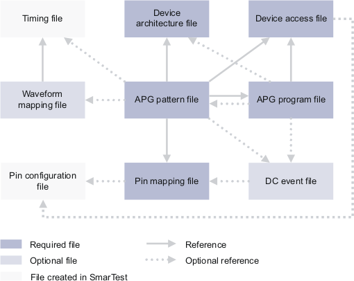

Overview of configuration files
The MTL compiler processes several optional and mandatory configuration files in addition to the source code file itself.
This section provides a brief overview of all mandatory and optional files.
This is a graphical display of the files and their relationships:

File descriptions
The files and their relationships are described in detail in MTL Configuration Files; here is a brief overview:
- APG pattern file (.apg)
The control file referencing all other files to be used. It also may contain general parameter definitions.
- APG program file (.prog)
The actual program that is compiled into the test pattern.
- Device access file (.dvac)
Specifications of all device accesses, that is, signals on pins and signal combinations on groups of pins that can be called by name in the program file. Optionally, the file also specifies MUX modes for HX pins.
- Device architecture file (.dvar)
A description of the memory device's low-level characteristics, such as scrambling and maintenance operations.
- Pin mapping file (.pmap)
A mapping of pin names used in the device access file to pin names used in SmarTest. All pins for which per-pin subroutines are to be created must be listed in this file. The file also specifies the default x-mode as well as, optionally, the mode context for automatic waveform generation and per-pin x-modes, expansion sizes, and cycle ratios.
- Waveform mapping file (.wmap)
Optional; required for Indirect waveform mapping. Maps sequences of state characters (device accesses) to indexes into a wavetable in the timing file.
- DC event file (.dcev)
Optional; required for actively driving levels and measurements on DC Scale pins. Specifies parameters for the DC_Scale testmethod.
- Pin configuration file (.pin)
Optional; required for Automatic waveform generation and Multiport operation. This file is generated in SmarTest.
- Timing file (.tim)
Definitions of the actual waveforms driving the pins. This file is generated in SmarTest.
For details on the files, see the respective sections referenced above.
Functional changes
- Introduced before SmarTest 6.3.2